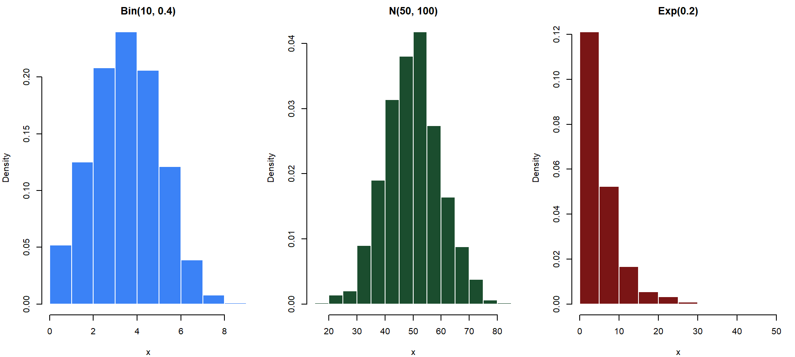
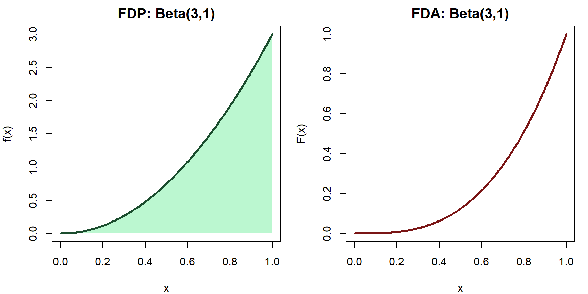

[1] 0.7063994[1] 0.2586868[1] 0.1060909Departamento de Estadı́stica, Sede Bogotá
Variables Aleatorias
Definición y tipos
Del espacio muestral a los números: cuantificando la incertidumbre
Bioestadística Fundamental — Departamento de Estadística, UNAL Bogotá
Contexto: En un estudio sobre malaria en el Chocó, se aplica un tratamiento a 10 pacientes. Para cada paciente se registra si se recupera (R) o no se recupera (N).
\(X \sim \text{Binomial}(3, 0.5)\): número de éxitos en 3 lanzamientos de moneda.
Existen variables que son ni puramente discretas ni puramente continuas. Por ejemplo: el tiempo de supervivencia en un estudio cuando algunos pacientes no presentan el evento (se “censuran”).
Un modelo probabilístico describe el comportamiento aleatorio de una variable mediante una distribución de probabilidad.
\[ X \sim \text{Nombre}(\theta) \]
donde \(\theta\) representa los parámetros del modelo.
Para \(p < 0.5\) sesgada a la derecha; para \(p = 0.5\) la distribución es simétrica; para \(p > 0.5\) sesgada a la izquierda.
\[ X \sim \text{Geométrica}(p), \quad 0<p<1 \]
con función de masa:
\[ p(k)=(1-p)^{k-1}p, \quad k=1,2,3,\ldots \]
Modela el número de intentos hasta el primer éxito.
Ejemplo: número de semillas sembradas hasta obtener la primera germinación.
Determine la probabilidad de que la primera germinación ocurra en el \(4^\circ\) intento.
\[ X \sim \text{Hipergeométrica}(N,K,n) \]
con función de masa:
\[ p(X=x)=\frac{\binom{K}{x}\binom{N-K}{n-x}} {\binom{N}{n}} \]
Modela éxitos en muestras sin reemplazo.
Ejemplo: número de frutas dañadas en una muestra seleccionada de una cosecha.
pnorm en R) para calcular probabilidades de cualquier normal.
Si el tiempo entre dos casos consecutivos de dengue en un barrio sigue una \(\text{Exp}(\lambda)\), y ya han pasado 5 días sin un nuevo caso, la probabilidad de esperar al menos 3 días más es la misma que al inicio: \(P(X > 3)\). El reloj se “reinicia” en cada momento.
\(X \sim \text{Beta}(\alpha, \beta)\), con \(\alpha, \beta > 0\), si:
\[ f(x)=\frac{\Gamma(\alpha+\beta)} {\Gamma(\alpha)\Gamma(\beta)} x^{\alpha-1}(1-x)^{\beta-1}, \quad 0<x<1 \]
donde \(\Gamma(\cdot)\) es la función Gamma.\(\alpha\) y \(\beta\) controlan la forma de la distribución sobre el intervalo \((0,1)\).
Usada para modelar proporciones, probabilidades y porcentajes.
| Distribución | Parámetros | Soporte | Notación |
|---|---|---|---|
| Bernoulli | \(p \in (0,1)\) | \(\{0,1\}\) | \(\text{Ber}(p)\) |
| Binomial | \(n \in \mathbb{N}\), \(p \in (0,1)\) | \(\{0,1,\ldots,n\}\) | \(\text{Bin}(n,p)\) |
| Poisson | \(\lambda > 0\) | \(\{0,1,2,\ldots\}\) | \(\text{Poi}(\lambda)\) |
| Geométrica | \(p \in (0,1)\) | \(\{1,2,3,\ldots\}\) | \(\text{Geo}(p)\) |
| Hipergeométrica | \(N,M,n\) | \(\{0,\ldots,\min(n,M)\}\) | \(\text{Hiper}(N,M,n)\) |
| Distribución | Parámetros | Soporte | Notación |
|---|---|---|---|
| Uniforme | \(a < b\) | \((a,b)\) | \(U(a,b)\) |
| Normal | \(\mu \in \mathbb{R}\), \(\sigma^2 > 0\) | \(\mathbb{R}\) | \(N(\mu, \sigma^2)\) |
| Exponencial | \(\lambda > 0\) | \((0,\infty)\) | \(\text{Exp}(\lambda)\) |
| Gamma | \(\alpha, \beta > 0\) | \((0,\infty)\) | \(\text{Gamma}(\alpha,\beta)\) |
| Beta | \(\alpha, \beta > 0\) | \((0,1)\) | \(\text{Beta}(\alpha,\beta)\) |
Ejercicios y aplicaciones en R
Para cada situación, indique si la variable es discreta o continua y proponga un modelo:
En un estudio sobre anemia en niños de Boyacá, \(X \sim \text{Bin}(8, 0.35)\) es el número de niños anémicos en un grupo de 8. Calcule:
El tiempo (en días) entre brotes sucesivos de una enfermedad en un cultivo de papa sigue una distribución \(\text{Exp}(\lambda = 0.1)\). Calcule la probabilidad de que el próximo brote ocurra:
Binomial — Media: 3.98 Var: 2.42 Normal — Media: 49.82 Var: 96.69 Exponencial— Media: 5.16 Var: 25.89 
Sea \(p(k) = c \cdot (0.6)^k\) para \(k = 0, 1, 2, \ldots\) Determine la constante \(c\) para que \(p\) sea una FMP válida.
¿Es \(f(x) = 3x^2\) para \(0 < x < 1\) (y \(f(x) = 0\) en otro caso) una FDP válida?

Conocido el modelo de \(X\) (su FMP o FDP), la siguiente pregunta natural es: ¿cuál es el valor “típico” de \(X\)?
Ejercicios para resolver en clase
Variables aleatorias — Definición y tipos
Un médico veterinario examina 4 cerdos de una granja del Meta para detectar fiebre aftosa. La probabilidad de que cada cerdo esté infectado es 0.25, independientemente. Sea \(X\) = número de cerdos infectados.
x p_x suma_acum
1 0 0.3164 0.3164
2 1 0.4219 0.7383
3 2 0.2109 0.9492
4 3 0.0469 0.9961
5 4 0.0039 1.0000Para cada función, determine si puede ser una FDP válida. Si no lo es, explique por qué. Si lo es, encuentre la FDA \(F(x)\).
La concentración de arsénico (μg/L) en pozos artesianos del Cauca sigue la distribución con FDA:
\[F(x) = 1 - e^{-0.08x}, \quad x > 0\]Justifique qué distribución usaría para modelar cada variable y especifique sus parámetros si es posible:
d-, p-, q-, r-
Clase 10
Funciones de probabilidad y densidad
Propiedades, cálculos y distribuciones en profundidad